photoshop の photoshop（写真屋）たるところは、 画像のレタッチ（修正・補正）機能にあります。 camera で取り込んだ画像を photoshop で補正してみましょう。
カメラの露出を下げすぎたり被写体への照明が不足したりすると、 露光不足となって下図のように、 全体的に暗い（暗い部分のつぶれた）画像になってしまいます。
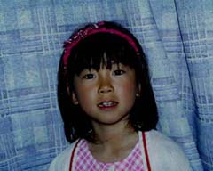
この場合は、メニューバーの "Image" メニューから "Adjust" → "Levels ..." を選んでください。
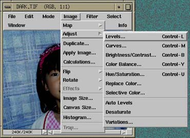
すると下のようなウィンドウが現われます。
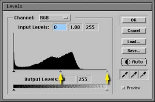
このウィンドウに表示されているグラフは ヒストグラム といい、同じ明るさの画素（画像を構成している個々の点）の数の分布を示します。 左端がもっとも暗い点（黒）の数、右端がもっとも明るい点（白）の数です。
このグラフが左に片寄っていることから、 この画像は全体的に暗い点の数が多く、 明るい点はほとんどないことが分かります。
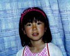
この画像の明るさを補正するには、 このウィンドウの Auto のボタンをクリックするだけでもいいのですが、 思う通りの結果が得られない場合も多いので、 ここでは自分で試行錯誤してやってみましょう。
まず、このグラフの下の右端にある三角マークをドラッグしてみてください。 画像が明るくなったり暗くなったりすると思います。 それと同時に、グラフの上にある Input Levels という３つの欄の、 右端の欄の値が変化します。 これは元の画像の明るさの最大値です。 この明るさがグラフの下にある Output Levels の右側の欄の値になるよう、 画像全体の明るさを調整します。 右の画像は明るさの最大値を 192 にしたものです。 これを 255 にするので、全体の明るさは （明るさの最小値が 0 の場合）255÷192≒1.32 倍になります。
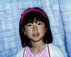
一方、真ん中の三角マークは画像の明るさの変化の仕方を変更します。 これはガンマ値と呼ばれ、 これを変更すると元の画像の中間の明るさが変化します。 真ん中の三角マークを左に動かすとガンマ値が上がり、 中間の明るさが明るい方に片寄ります （明るさの最大値は変化しません）。 右の画像は上の画像のガンマ値を 1.4 に設定したものです。
人間の目は Photoshop が取り扱うような、 明るさの数値をそのまま明るさとして知覚するわけではありません。 明るさの数値が倍になっても、倍の明るさを感じるわけではないのです。 ガンマ値はこのような人間の目の特性を補正するときに用います。 この値は表示装置（ディスプレイか、印刷か、等）によっても変わります。
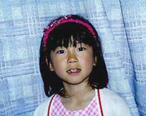
逆にカメラの露出を上げすぎたり被写体への照明が明るすぎると、 露光過多となって下図のように、 全体的に明るい（明るい部分の飛んだ）画像になってしまいます。
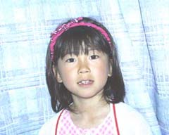
この場合も同様にメニューバーの "Image" メニューから "Adjust" → "Levels ..." を選んでください。 すると下のようなウィンドウが現われます。
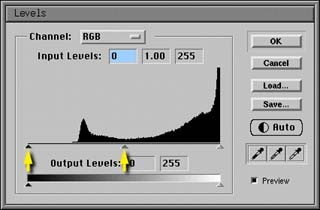
このヒストグラムが右に片寄っていることから、 この画像は全体的に明るい点の数が多く、 暗い点はほとんどないことが分かります。
そこで、このグラフの下の左端にある三角マークをドラッグしてみてください。 画像が明るくなったり暗くなったりすると思います。 それと同時に、グラフの上にある Input Levels という３つの欄の、 左端の欄の値が変化します。 これは元の画像の明るさの最小値です。 この明るさがグラフの下にある Output Levels の左側の欄の値になるよう、 画像全体の明るさを調整します。 右の画像は明るさの最小値を 64 にしたものです。 これを 0 にするので、全体の明るさは明るさの最大値が 255 の場合、 （元の明るさ－64）×255÷（255－64）になります。
さらに、同様にガンマ値も変化させます。 右の画像は上の画像のガンマ値を 0.8 に設定したものです。
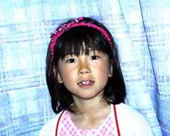
O2 の camera で取り込んだ画像は、 ピントはあっていても結構甘い（ぼやけた）ものになっています。 また、人間の目の特性により、 ディスプレイ上の表示ではくっきりと見えていても、 それを印刷すると、やはり甘い感じがする場合があります。
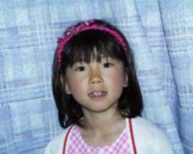
そういう場合は輪郭の強調処理を行ってやります。 メニューバーの "Filter" メニューの "Sharpen" に、 いくつか輪郭の強調に関係するメニューがあります。 何も考えずに輪郭を強調すると、 輪郭だけでなく画像に含まれる雑音まで強調してしまい、 かえって画像を損なってしまう恐れがありますから、 ここでは "Unsharp Mask ..." を選んでください。 これは試行錯誤しながら輪郭を強調できます。
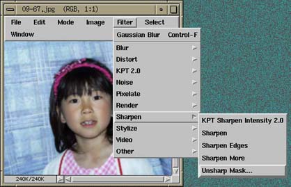
すると次のようなウィンドウが現われます。
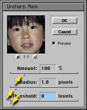
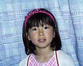
Amount は強調する度合いで、 この値を大きくするほどきつく強調されます。
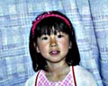
Radius は強調処理の影響範囲で、 この値を大きくするほど派手に強調されます。
Threshold は強調処理を行うしきい値で、 隣接する色の変化量がこの値より小さければ、 その境界は強調されません。 これを調整して、雑音などが強調されてしまうのを、 抑えることができます。
Preview をクリックしておけば、 変更がリアルタイムに元の画像に反映されます（が、応答は悪くなります）。 Preview をもう一度クリックすれば元に戻りますから、 こうして変更前と変更後の画像を見比べてみてください。
あと、ここでは解説しませんが、下のようなこともできます。